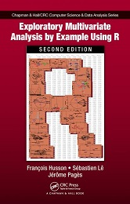

Activités d'enseignement
Je suis responsable de la spécialisation de statistique appliquée (environ 25 étudiants par an).
J'enseigne un module de statistique générale (estimation, tests d'hypothèses, analyse de variance, régression linéiare), un module d'analyse de données sous forme de MOOC, un module de sensométrie.
Livres en français
|
F. Husson, et al. |
|
F. Husson, S. Lê & J. Pagès |
| P-A. Cornillon, A. Guyader, F. Husson, N. Jégou, J. Josse, M. Kloareg, E. Matzner-Lober, L. Rouvière. |
| Husson F. et Pagès J. |
Livres en anglais
|
Cornillon, P-A., Guyader, A., Husson, F., Jégou, N., Josse, J., Kloareg, M., Matzner-Lober, E. & Rouvière, L. |
 | F. Husson, S. Lê & J. Pagès (2017) Exploratory Multivariate Analysis by Example Using R. 2ème édition. Chapman & Hall/CRC Computer Science & Data Analysis. Commander. Données |
Livre en espagnol
| F. Husson, S. Lê & J. Pagès |
Vidéos sur le module d'analyse de données
Cet ensemble de vidéos propose un cours d'analyse de données (les liens en bleu correspondent à des cours, les liens en marron à des mise en oeuvre sur ordinateur).
Vidéos sur le module de sensométrie
Cet ensemble de vidéos propose un cours de sensométrie.
Recueil de données chocolat : fiche descriptive
1. Introduction | 2. Caractérisation de produits |
3. Evaluation de la performance d'un jury | 4. Construction d'un espace produits |
5. Cartographie des préférences | 6. Analyser des données de catégorisation |
Tutorials
Tutorial useR! 2015
The tutorial will take place in Aalborg. You can print the slides. If you want to use your laptop, you should install the following packages: FactoMineR, missMDA, VIM, Amelia, norm, mice. You can also download the two datasets.
- Slides of the presentation
- Ozone data: dataset, lines of code
- Ecological data: dataset, lines of code
Vidéos de quelques tutoriels sur R
Vous trouverez ici des vidéos pour mettre en oeuvre différentes méthodes statistiques grâce au logiciel R.
Cours divers
Cours de statistique générale (niveau L3)
- Régression multiple : diaporama, version 4 pages
- Analyse de variance : diaporama, version 4 pages
- Plans fractionnaires : diaporama, version 4 pages, vidéo (1h30)
Cours sur les plans d'expériences
- Exercice d'introdution aux plans fractionnaires
- Cours sur les plans fractionnaires : diaporama, version 4 pages, vidéo (1h30)
- Exercice d'introduction aux plans continus
- Cours sur les plans continus : diaporama, version 4 pages
- Cours pour plan avancés (plus de 2 modalités, plans optimaux) : diaporama, version 4 pages
Cours de sensométrie (M2)
- Questions-introduction
- Construction d'un espace produit - comparaison des espaces produits de plusieurs panels
- Cartographie des préférences
- Catégorisation de produits
- Tri hiérarchique
- Traitement de données recueillies par nappes
Cours avancés (niveau M2)
- Evaluation de modèles : diaporama, version 4 pages, jeu de données
- Modèles GAM : diaporama, version 4 pages, jeu de données, code R
- Cartes de contrôle (carte CUSUM) : diaporama, version 4 pages
Projet étudiant (module de sensométrie)
Projet de sensométrie 2018:
- Méthode JAR (diaporama)
- Méthode CATA (diaporama)
- Projective Flash Profile (diaporama)
- Digit Napping (diaporama, script)
- Dominance temporelle des sensations (diaporama)
Exposés de 2015: